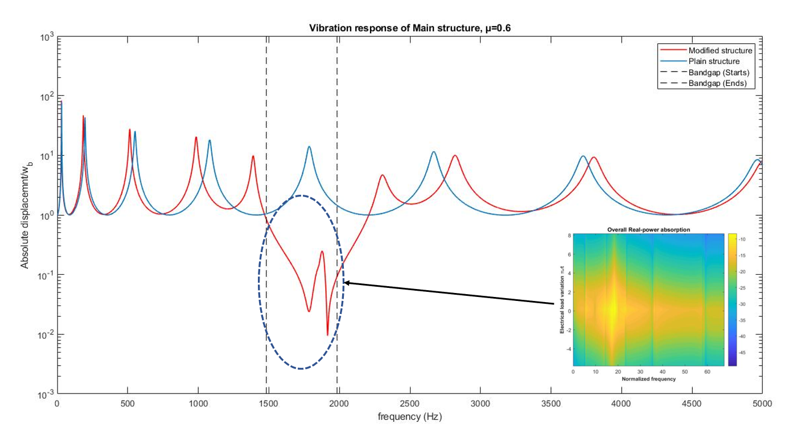

<div id="portfolio-page" class="portfolio-page-content">
    <div class="container">
        <div class="portfolio-nav">
            <div id="portfolio-close-button" class="portfolio-close-button">
                <a href="#portfolio"><i class="fa fa-close"></i></a>
            </div>
        </div>

        <div class="portfolio-title">
            <h1>Portfolio Project</h1>
        </div>

        <div class="row">
            <div class="col-sm-5 col-md-5 portfolio-block">
                <div class="owl-carousel portfolio-page-carousel">
                    <div class="item">
                        
                    </div>
                    <div class="item">
                        
                    </div>
                    <div class="item">
                        
                    </div>
                </div>

                <!-- <div class="portfolio-page-video embed-responsive embed-responsive-16by9">
                  <iframe class="embed-responsive-item" src="https://player.vimeo.com/video/97102654?autoplay=0"></iframe>
                </div> -->

                <!--
                <div class="portfolio-page-image">
                    
                </div>
                -->

                <script type="text/javascript">
                    jQuery(document).ready(function($){
                        $('.portfolio-page-carousel').owlCarousel({
                            smartSpeed:1200,
                            items: 1,
                            loop: true,
                            dots: true,
                            nav: true,
                            navText: false,
                            margin: 10
                        });
                    }); 
                </script>
            </div>

            <div class="col-sm-7 col-md-7 portfolio-block">
                <!-- Project Description -->
                <div class="block-title">
                    <h3>Energy Harvesting & Bandgap Formation in Meta-structures using Piezoelectric Materials</h3>
                </div>
                <ul class="project-general-info">
                    <li><p><i class="fa fa-user"></i>Energy Harvesting & Bandgap Formation in Meta-structures using Piezoelectric Materials</p></li>
                    <!-- <li><p><i class="fa fa-globe"></i> <a href="#" target="_blank">www.project-site.com</a></p></li> -->
                    <li><p><i class="fa fa-calendar"></i> Apr 2018 - Jul 2018</p></li>
                </ul>

                <p class="text-justify">In this project, I have assessed the formation of Bandgap & Energy Harvesting in Meta structures, specifically, a Cantilever beam had been considered for the
                    assessment. That is, for analysis of cantilever beam with resonators attached to the beam utilizing springs are considered at the initial stage for the formation
                    of bandgap at the desired range of frequencies (Lumped resonators are considered initially). Governing equations for the Meta-system has been derived and
                    combined to form an electromechanical system. After creating a bandgap formation at a desired range of frequencies, Piezoelectric material is glued onto the
                    resonators to harvest energy but before employing piezoelectric layer on the resonators, equivalent distributed resonators are modelled which is performed by using
                    the Rayleigh method of approximation for one-degree of freedom system. On further, Energy harvesting is simulated for a range of electrical load considering into
                    account of previously set bandwidth of bandgap. The effect of shunt circuitry on bandgap formation is studied. Lastly, Comparisons for various system parameters
                    are simulated. Optimality of the overall system is performed by considering the safety of the main beam (Plain structure), attenuation of vibrations along power
                    absorption. Realization with commercially available material is performed, practical limitations are discussed. Combining Mechanical-electrical governing equations
                    for the overall system is performed for an Euler-Bernoulli based beam. Analysis of a coupled system is conducted by the Modal approach. Frequency response of
                    the system for various system parameters such as Vibration response of main structure and resonators, Electrical parametric responses such as voltage, current and
                    power generation has been studied by considering different Admittance operators such as Resistor, Capacitor, Inductor and a combination of Resistor-Inductor,
                    resistor-capacitor etc in a given range of frequencies. Additionally, conversion of AC-DC conversion for constant power absorption is implemented. And the effect
                    of energy harvesting directly from the main structure and from both Resonators and the main structure is studied. Comparison of energy harvesting between
                    various combinations is performed. Effects of various system parameters such as geometric, material on electrical power generation and bandgap formation have
                    been studied for various electrical loads. And Optimal conditions for geometry, electrical load for power generation and bandgap formation are studied along with a
                    realization. Appropriate conclusions have been made by considering all the above parameters into consideration. The effect of several unit cells on optimal system
                    parameters such as electrical load, bandgap formation, Power generation is studied. Realizing these optimal solutions with commercially available products such
                    as commercial piezo patches, existing values for an electrical load such as inductance, capacitance and resistance are studied. The final part of the analysis is the
                    structural integrity of the main beam under dynamic behaviour is performed by using “Strain based approach due to fatigue”. Appropriate conclusions have been
                    made by taking bandgap formation, power generation and structural integrity into consideration.</p>
                <!-- /Project Description -->

                <!-- Technology -->
                <div class="tags-block">
                    <div class="block-title">
                        <h3>Keywords</h3>
                    </div>
                    <ul class="tags">
                        <li><a>Meta-structures</a></li>
                        <li><a>Linear Energy Harvesting</a></li>
                        <li><a>Vibration Attenuation</a></li>
                        <li><a>Piezoelectric Materials</a></li>
                        <li><a>Bandgap Formation</a></li>
                        <li><a>Structural Integrity</a></li>
                        <li><a>Commercial Piezo Patches</a></li>
                        <li><a>Euler-Bernoulli Beam Modelling</a></li>
                        <li><a>Electrical Load</a></li>
                        <li><a>Optimality</a></li>
                        <li><a>AC-DC Conversion</a></li>
                    </ul>
                </div>
                <!-- /Technology -->

                <!-- Share Buttons -->
                <!-- <div class="btn-group share-buttons">
                    <div class="block-title">
                        <h3>Share</h3>
                    </div>
                    <a href="#" target="_blank" class="btn"><i class="fa fa-facebook"></i> </a>
                    <a href="#" target="_blank" class="btn"><i class="fa fa-twitter"></i> </a>
                    <a href="#" target="_blank" class="btn"><i class="fa fa-dribbble"></i> </a>
                </div> -->
                <!-- /Share Buttons -->
            </div>
        </div>
    </div>
</div>
